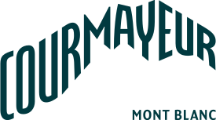
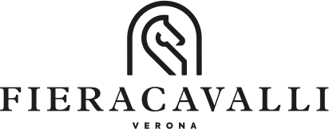
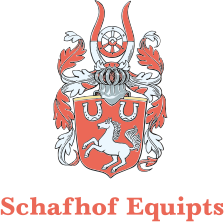
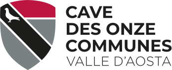
Il circuito italiano di arena polo apre la nuova stagione tra le vette innevate del Monte Bianco, con un emozionante torneo di snow polo. Sport, quota e adrenalina, in notturna e sulla neve!




Italia Polo Challenge è il circuito che porta il polo fuori dal campo tradizionale: sulla neve di Courmayeur, in arena a Roma, sotto il cielo stellato di Porto Cervo e sul palcoscenico indoor di Fieracavalli a Verona. Un torneo itinerante, organizzato da The Chukker Company, che unisce sport, territorio e spettacolo.
Ogni tappa ha una sua identità e autenticità, ma condivide con le altre la stessa promessa e lo stesso spirito: vedere in campo squadre internazionali di altissimo livello tecnico, cavalli scelti con cura, un'organizzazione che lavora sotto il patrocinio della Federazione Italiana Sport Equestri.
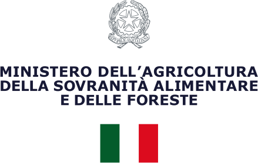
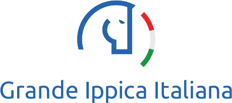
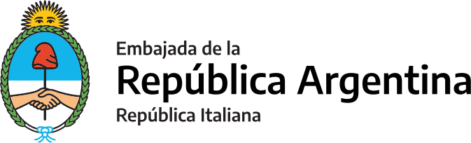
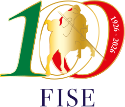
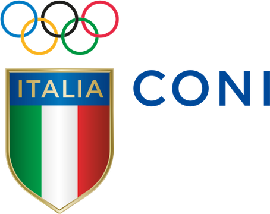
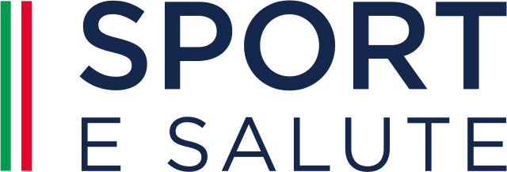
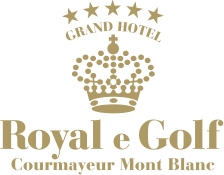
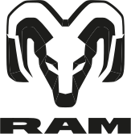
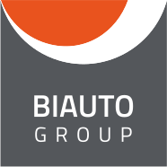
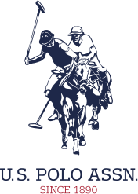
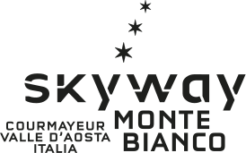
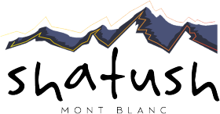
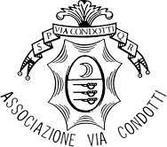
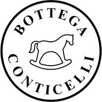
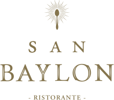
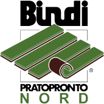
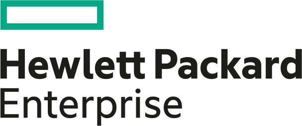
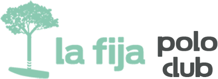
Segui il circuito
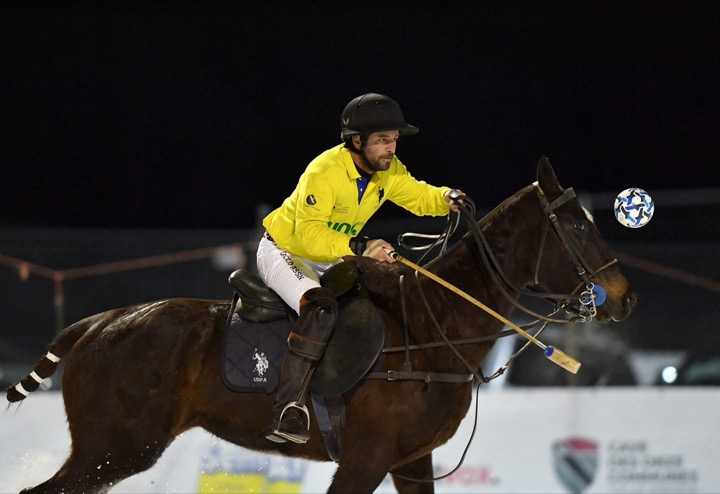
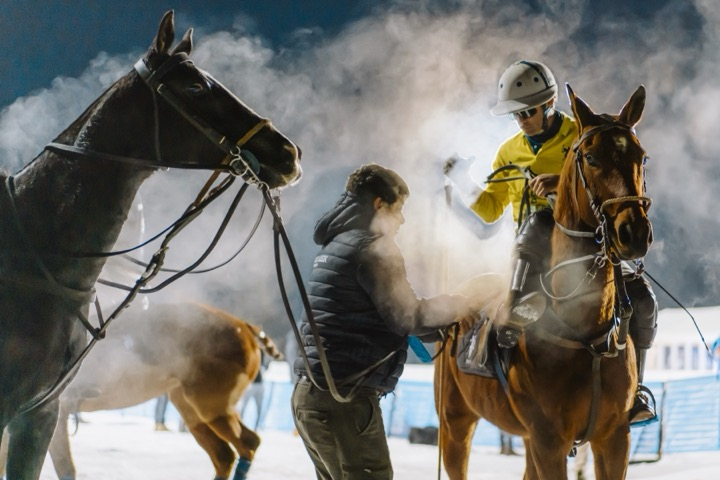
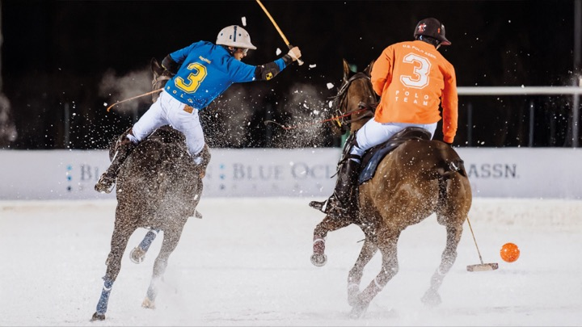
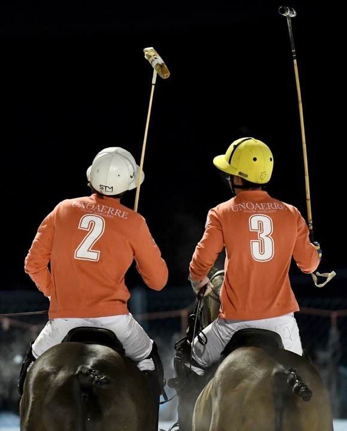
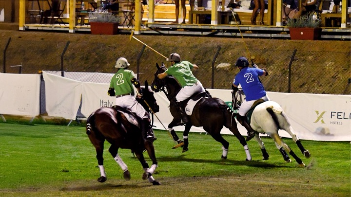
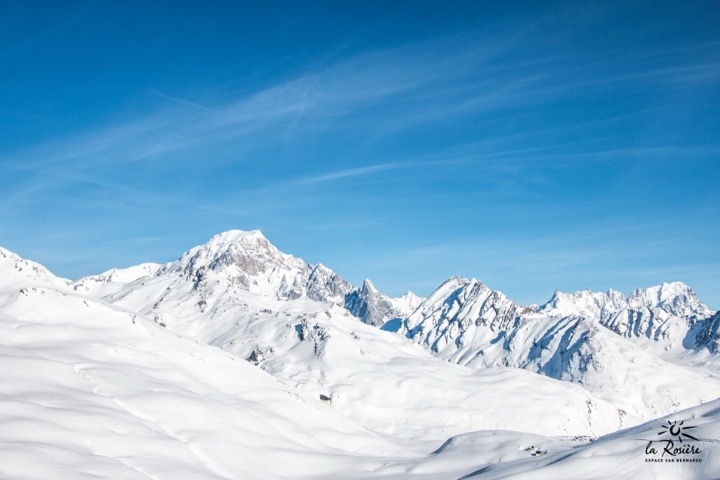